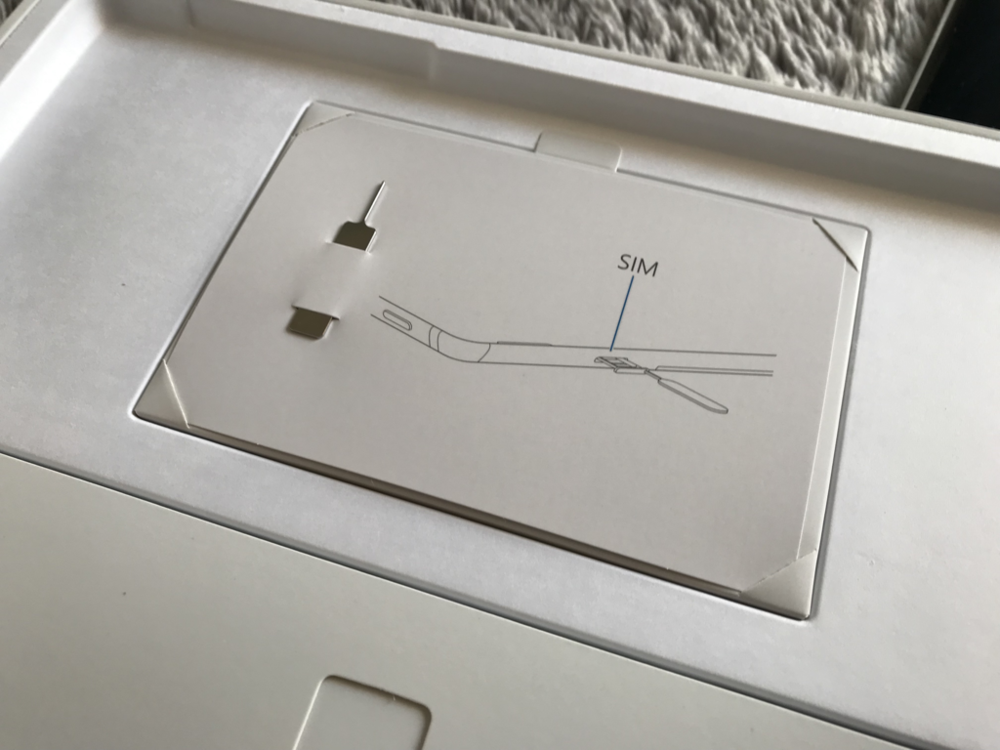

11月29日：Surface Go LTE が我が家にやってきました
公開日：
法人・教育向けオンリーってことであまり話題になってませんが、今日は Surface Go LTE の発売日です。
個人での入手は若干面倒くさいですが、大塚商会の「たのめーる」あたりが楽かもしれません（ちゃんと法人向けアカウントでね！）。固定電話さえあれば、個人事業主でもちゃんと相手をしてくれるようです。うちの場合、自宅（愛媛県松山市）には固定電話がないのですが、今滞在している実家（千葉県市川市）には固定電話があったので、そっちを拝借しました。入会時にちょっと色々聞かれましたが、とくに問題なく受注してもらえました。
ただ、受け取りのときにクレカが使えなかった……コンビニに走って10万円を下ろしてきたのですが、配達のおじさんに2度手間を取らせてしまい申し訳なかったです。
スペック

型番は KC2-00014。価格は税抜きで 84,800円。税込みだと9万円を超えちゃって、ちょっと高い感じです。
- CPU：Pentium Gold 4415Y
- メモリ：8GB
- ストレージ：128GB
同じようなスペックで一般向けの MCZ-00014 は、だいたい 80,000 円ぐらいで売られているみたい。
| MCZ-00014 | KC2-00014 | ||
| OS | Windows 10 Home | → | Windows 10 Pro |
| Office | Office Home and Business 2016 | → | × |
| LTE Advanced | × | → | ○ |
もともと Windows 10 Pro は必要、かつオンプレ版 Office は不要なので、法人版の方が自分には合ってる感じ。1万円で LTE が付いたと思えば、そんなに高い感じはしないです。ちなみに、Windows 10 Pro は S モードではなく、普通の Windows 10 Pro のようでした。あ、そうなんだ？って感じ。
開封
それではさっそく開封……といっても、Surface の開封は何度もやってるので、割愛。

SIM ピンがついているのが LTE 版っぽいなーってぐらいです。残りの内容物は、充電器ぐらい。
SIM は IIJmio のデータ SIM を使っていますが、APN を追加するだけで、今のところ問題なく接続できています。むしろ Wi-Fi がぶちぶち切れるのですが……ファームウェアのアップデートで直ればいいな。うちのルーターと相性が悪いだけなのかもだけど。
追加購入
追加で購入したタイプカバーとペンは、ヨドバシで購入。安くほしい場合は Amazon の方がよさそうですけど、ポイントがたまっていたので……ついでにタイプカバーはちょっと高めのアルカンタラなバージョンを選びました。色はコバルトブルーで統一したのですが、結構かっこいいですね。満足かも

Surface Go Signature タイプ カバー コバルトブルー KCS-00039
- 出版社/メーカー: マイクロソフト
- 発売日: 2018/08/28
- メディア: エレクトロニクス
- この商品を含むブログを見る

マイクロソフト 【純正】 Surface Pro 対応 Surfaceペン コバルトブルー EYU-00023
- 出版社/メーカー: マイクロソフト
- メディア: エレクトロニクス
- この商品を含むブログを見る
これまで使っていた Surface 3/Pro 3 のものに比べると、アイソレートになっている点、タッチパッドが広くなっている点などが違いですね。
Surface 3/Pro 3 はぺちゃぺちゃしたうち心地だったのですが、新しいタイプカバーはしっかりしていて、結構打ちやすいと思いました。この記事も Surface Go＋タイプカバーで入力していますが、まぁ、typo はあるかもですが、入力速度は Surface Book 2 のときとあまり変わらない感じ。大満足です。
あと、タッチパッドの使いごこちも段違いですね！ 高さはあまりないけど、横幅はしっかりあって……あと、触った感じがさらさらしていて、二本指でのスクロールや三本指でのタスク切り替え・仮想デスクトップ切り替えも快適でした。結構進化してるかな？
あとはお手製の PowerShell で一発環境構築（この前、VPN のセットアップもスクリプトでできるようにしておいたので、ほんとにほぼスクリプトだけでいけました！ OneDrive や「メール」アプリのアカウント設定もスクリプトでできたら完璧だなぁ）。これでぶりぶりブログが書けそう……この子はあまり開発に使わず、Insider Preview をいれてガシガシ使っていきたいと思っています。